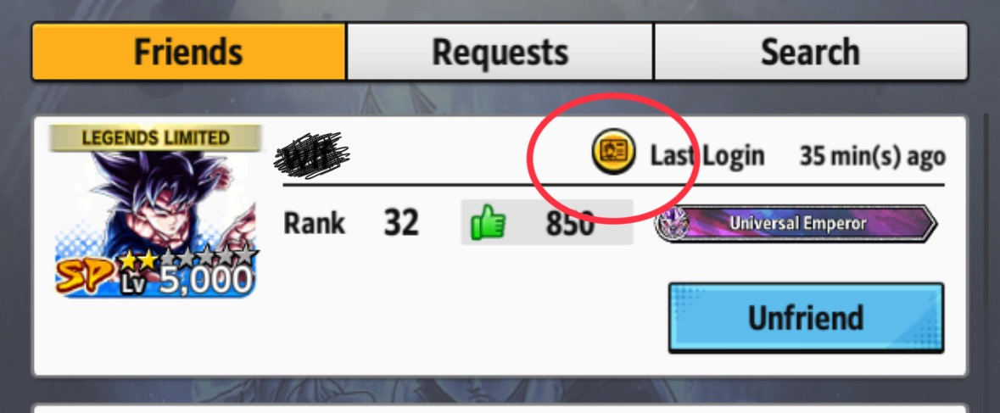
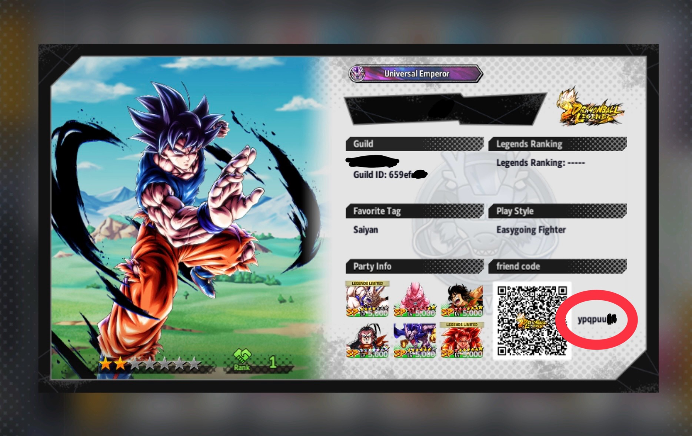
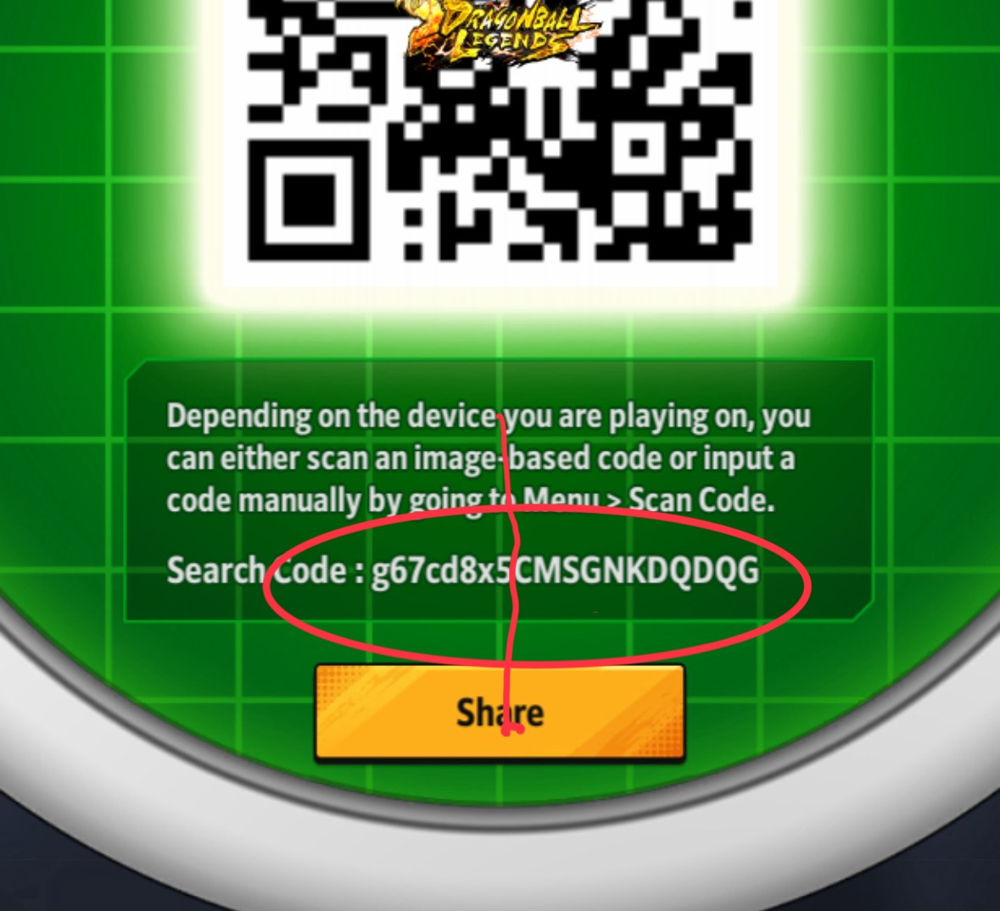

User Guide
Learn how to use the QR Code Generator step by step
Find the prefixes — Part 1
Head over to the Friends section of the game. From there, you can view the Profile Card of any player you are friends with in-game. Each profile card contains a unique QR code along with a short alphanumeric string — this string is what you need. You will collect one prefix for each friend whose QR code you want to generate.

Find the prefixes — Part 2
Once you open a player's profile card, look at the bottom-right corner next to their QR code — you will find a short code displayed there. Copy that code; it will serve as one of your prefixes. Repeat this process for each friend whose QR code you need. For example, if you need three QR codes, you should collect three different prefix codes.

Find the QR Code text
Navigate to the Dragon Balls section of the game. Here you will find your own personal QR code. Tap on it to reveal the full text string, then copy only the relevant portion of that string — this is the shared text that will be appended to each of the prefixes you collected in the previous steps. Together, each prefix combined with this text forms the final content encoded in each QR code.

Helpful Notes
JSON Format
The JSON file can be either a simple array or an object with a "prefixes" key.
For example: {"prefixes": ["4,9np4rsa8", "4,3a4awhdm"]}.
After entering your prefixes manually, you can download a JSON file to speed things up
next time — just click Upload JSON and all your prefixes will be loaded
automatically.